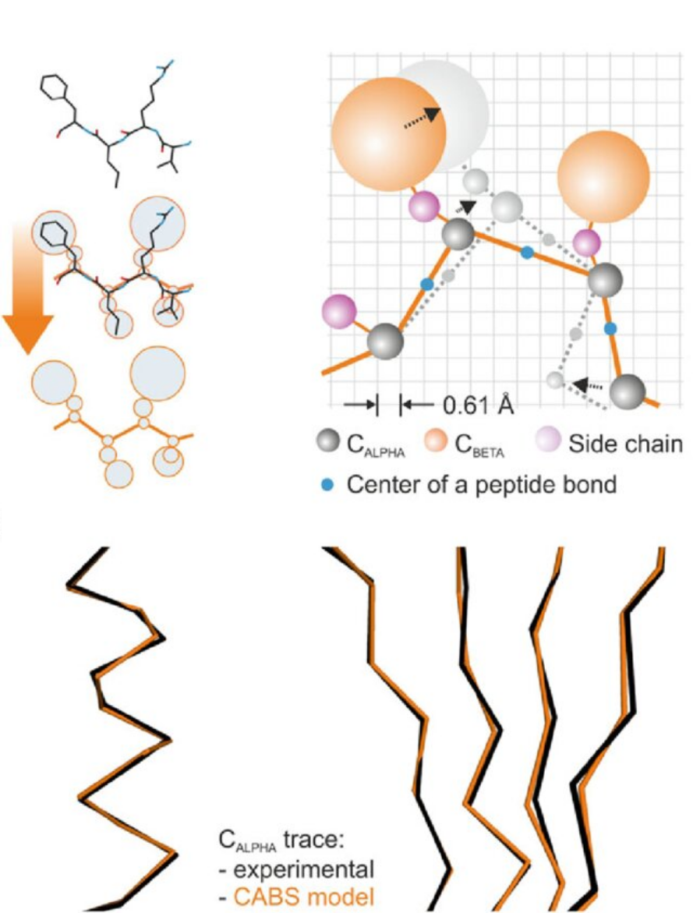

← Home | Overview | Options | Examples | Output Analysis | Advanced Data
CABS-dock — Peptide-Protein Docking¶
CABS-dock is an efficient simulation method for protein-peptide docking. The method enables simulation of significant conformational changes during the docking search for a binding site. The CABS-dock standalone package allows for control and modification of every simulation step.
📖 Sub-pages: - CABS-dock Options — categorized list of all command-line options - CABS-dock Examples — ready-to-use examples for various docking scenarios - CABS-dock Output & Analysis — output models, plots, and re-analysis - CABS-dock Advanced Data — internal file formats (INP, SEQ, FCHAINS, TRAF, OUT) - Options Index — alphabetical index of all options (shared with CABS-flex)
1. Pipeline¶
The picture below shows the CABS-dock pipeline with default settings.

2. Simulation Videos¶
CABS-dock simulations produce rich trajectories showing the docking process. Below is a gallery of example simulations demonstrating everything from basic docking to large-scale conformational changes.
🎥 Trajectory Gallery¶
| Movie 1: Single Replica trajectory | Movie 2: 10 Replicas with RMSD analysis |
|---|---|
| Single trajectory (system replica) demonstrating the docking search. | Overview of 10 system replicas with integrated RMSD analysis. |
| Movie 3: Protein–Protein Docking | Movie 4: Peptide-Protein Binding (TRAP220 + RXRα) |
| Large-scale backbone flexibility in protein–protein docking (IJMS 2021). | TRAP220 coactivator searching and binding to RXRα (JSBMB 2010). |
| Movie 5: p53-MDM2 Large-Scale Docking | |
| Molecular docking with large-scale conformational changes (Sci Rep 2016). |
3. CABS Simulation Engine¶
CABS-dock uses an efficient simulation engine: the CABS coarse-grained protein model. The picture below shows a comparison between all-atom representation (left) and CABS coarse-grained model representation (right) for an example 4-residue protein fragment. In CABS, a single amino acid is represented by 4 atoms (or pseudo-atoms): C-alpha (CA), C-beta (CB), center of the mass of the Side-Chain group (SC) and center of the peptide bond (cp).
Note: CABS-dock modeling scheme allows applying/modifying distance restraints between selected CA atoms or between selected SC pseudo-atoms.

CABS design and applications have been described in the review: Chemical Reviews, 116:7898–7936, 2016
4. Average Simulation Time¶
The plot below presents average simulation time (in hours) and min/max times for jobs as a function of a protein-peptide system size (receptor + peptide), for the default number of simulation cycles (50), using single 2.5 GHz processors. The plot was made using data from the CABS-dock web server.

5. Key Differences from CABS-flex¶
CABS-dock and CABS-flex share the same codebase but serve different purposes and use different default parameter sets:
| Parameter | CABS-flex default | CABS-dock default |
|---|---|---|
| Purpose | Protein flexibility analysis | Peptide-protein docking |
--temperature |
1.4 1.4 |
2.0 1.0 |
--replicas |
1 |
10 |
--protein-restraints |
flexible |
rigid |
--ca-rest-weight |
1.0 |
1.0 |
--weighted-fit |
gauss |
off |
CABS-dock adds peptide-specific options (--peptide, --add-peptide, --exclude, --separation, --pairmod) not available in CABS-flex.
6. CABS-dock Scoring¶
CABS-dock scoring procedure can be modified by users. The default procedure works as follows:
- Simulation module produces a set of 10,000 models (10 trajectories × 1000 models) in CA representation.
- Scoring module selects top-scored models based on interaction energy values and structural clustering. Outputs 10, 100, and 1000 top-scored models in CA representation.
- Reconstruction module uses Modeller (or cg2all) to reconstruct the 10 top-scored models from CA to all-atom representation.
7. Papers on CABS-dock Development and Applications¶
-
CABS-dock web server for flexible docking of peptides to proteins without prior knowledge of the binding site, Nucleic Acids Research, 43(W1): W419-W424, 2015 — describes the CABS-dock web server and results for the PeptiDB benchmark set.
-
Modeling of protein-peptide interactions using the CABS-dock web server for binding site search and flexible docking, Methods, 93, 72-83, 2016 — presents advanced options including flexibility settings, scoring with all-atom MD, and a VMD tutorial appendix.
-
Protein-peptide molecular docking with large-scale conformational changes: the p53-MDM2 interaction, Scientific Reports 6, 37532, 2016 — demonstrates docking with large-scale structural rearrangements.
-
Highly flexible protein-peptide docking using CABS-dock, Methods in Molecular Biology, 1561: 69-94, 2017 — docking of a therapeutic peptide, simulation contact maps, and command-line scripts tutorial.
-
Modeling EphB4-EphrinB2 protein–protein interaction using flexible docking of a short linear motif, Biomedical Engineering Online, 16:71, 2017 — protocol for protein-protein docking using CABS-dock with a short linear motif.
-
Protein–peptide docking using CABS-dock and contact information, Briefings in Bioinformatics, bby080, 2018 — enhancing docking with fragmentary contact information.
-
Protein–Protein Docking with Large-Scale Backbone Flexibility Using Coarse-Grained Monte-Carlo Simulations, International Journal of Molecular Sciences, 22(14), 7341, 2021 — presents large-scale backbone flexibility docking simulations.
← Output Analysis | Next: CABS-dock Options